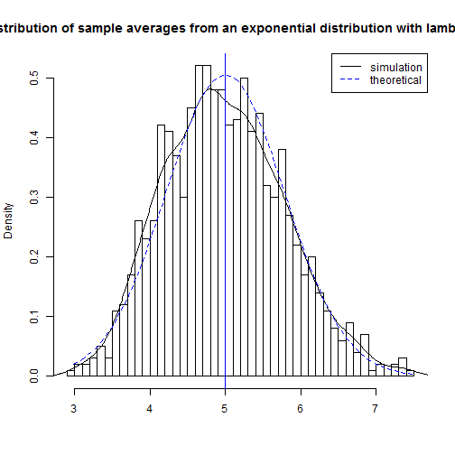
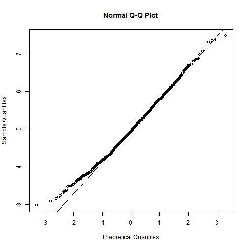

The exponential distribution can be simulated in R with rexp(n, lambda) where
lambda \(\lambda\) is the rate parameter. The mean of exponential distribution is
\(1/\lambda\) and the standard deviation is also \(1/\lambda\). For this simulation,
we set \(\lambda=0.2\). In this simulation, we investigate the distribution of
averages of 40 numbers sampled from exponential distribution with \(\lambda=0.2\).
We've used a thousand simulated averages of 40 exponentials.
set.seed(3)
lambda <- 0.2
num_sim <- 1000
sample_size <- 40
sim <- matrix(rexp(num_sim*sample_size, rate=lambda), num_sim, sample_size)
rmeans <- rowMeans(sim)
The distribution of sample means:
# plot the histogram of averages
hist(rmeans, breaks=50, prob=TRUE,
main="Distribution of sample averages from an exponential distribution with lambda=0.2",
xlab="")
# density of the averages of samples
lines(density(rmeans))
# theoretical center of distribution
abline(v=1/lambda, col="blue")
# theoretical density of the averages of samples
xfit <- seq(min(rmeans), max(rmeans), length=100)
yfit <- dnorm(xfit, mean=1/lambda, sd=(1/lambda/sqrt(sample_size)))
lines(xfit, yfit, pch=22, col="blue", lty=2)
# add legend
legend('topright', c("simulation", "theoretical"), lty=c(1,2), col=c("black", "blue"))

The distribution of sample means is centered at 4.9866197 and the theoretical center of the distribution is \(\lambda^{-1}\) = 5. The variance of sample means is 0.6257575 where the theoretical variance of the distribution is \(\sigma^2 / n = 1/(\lambda^2 n) = 1/(0.04 \times 40)\) = 0.625.
With regard to the central limit theorem, the averages of samples follow normal distribution. The above figure shows the density computed using a histogram and the normal density plotted with theoretical mean and variance values. The q-q plot below suggests the normality.
qqnorm(rmeans); qqline(rmeans)

Finally, to evaluate the confidence interval for \(1/\lambda = \bar{X} \pm 1.96 \frac{S}{\sqrt{n}}\)
lambda_vals <- seq(4, 6, by=0.01)
coverage <- sapply(lambda_vals, function(lamb) {
mu_hats <- rowMeans(matrix(rexp(sample_size*num_sim, rate=0.2),
num_sim, sample_size))
ll <- mu_hats - qnorm(0.975) * sqrt(1/lambda**2/sample_size)
ul <- mu_hats + qnorm(0.975) * sqrt(1/lambda**2/sample_size)
mean(ll < lamb & ul > lamb)
})
library(ggplot2)
qplot(lambda_vals, coverage) + geom_hline(yintercept=0.95)
The 95% confidence intervals for the rate parameter (\(\lambda\)) estimate (\(\hat{\lambda}\)) are \(\hat{\lambda}_{low} = \hat{\lambda}(1 - \frac{1.96}{\sqrt{n}})\) agnd \(\hat{\lambda}_{upp} = \hat{\lambda}(1 + \frac{1.96}{\sqrt{n}})\). As evident from the above plot, for selection of \(\hat{\lambda}\) around 5, the average of the sample mean falls within the confidence interval around 95% of the time.